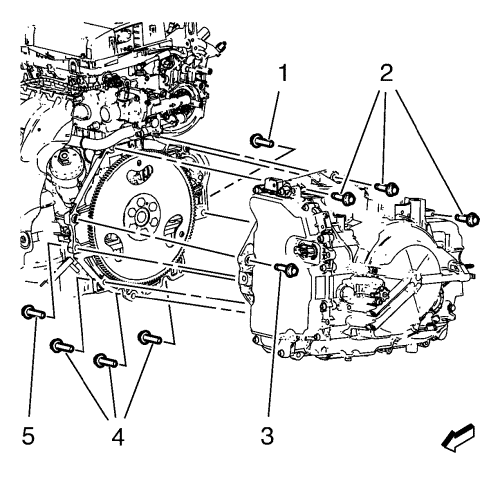
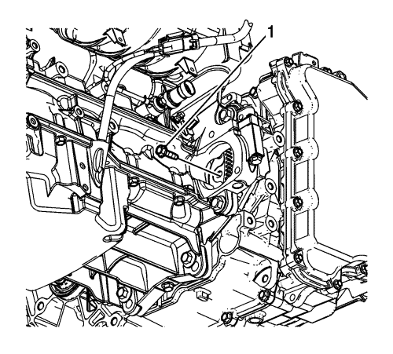
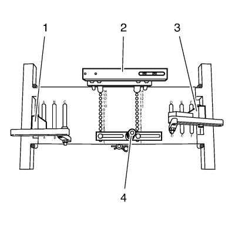
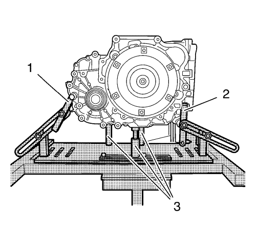

Sustitución de la caja de cambios — 1.6L LXT, L2W, LDE y 1.8L 2H0
Herramientas especiales
| • | DT-47648 Soporte del cambio |
| • | EN-47649 Dispositivo de soporte del motor |
| • | CH-49290 Soporte de motor/cambio |
Si desea informarse sobre herramientas regionales equivalentes, consultar Herramientas especiales .
Procedimiento de desmontaje
- Desmonte la bandeja de la batería. Consultar Sustitución de la bandeja de la batería .
- Extraiga el soporte y el cable de la palanca selectora del cambio. Consultar Sustitución del soporte del cable de la palanca selectora .
- Vacíe el aceite del cambio.

- Desconecte el conector eléctrico (1) del módulo de control del cambio (TCM) del cuerpo de válvula de control y, a continuación, suelte el conector del cambio.

- Extraiga las tuberías de entrada (1) y salida (5) del refrigerador de aceite del seguro (2) de la tapa del cuerpo de válvula de control.
- Extraiga la tuerca de la tubería de entrada del refrigerador de aceite del cambio (3) de la caja de cambios.
- Extraiga la tubería de entrada del refrigerador de aceite del cambio (1) de la caja de cambios.
- Extraiga la tuerca de la tubería de salida del refrigerador de aceite del cambio (4) de la caja de cambios.
- Extraiga la tubería de salida del refrigerador de aceite del cambio (5) de la caja de cambios.
- Tapone y/o tape las tuberías y el cambio para evitar la contaminación.

- Extraiga los tornillos de cambio al motor de la parte superior (2).
- Monte el dispositivo de soporte del motor EN-47649. Consultar Dispositivo de soporte del motor .
- Elevar el vehículo y soportarlo de manera segura. Consultar Elevación del vehículo con un gato .
- Monte el cambio/motor de montaje CH-49290. Consulte Soporte del motor/cambio .
- Desmonte el bastidor de la suspensión delantera y del tren de rodaje. Consultar Sustitución del bastidor de la suspensión delantera y del tren de rodaje .
- Desconecte el semieje de la rueda delantera izquierda de la caja de cambios. Consultar Sustitución del semieje de la rueda delantera - lado izquierdo .
- Desconecte el semieje de la rueda delantera derecha del semieje intermedio de la rueda delantera. Consultar Sustitución del semieje de la rueda delantera - lado derecho .
- Retire el árbol intermedio de accionamiento de la rueda delantera derecha de la caja de cambios. Consultar Sustitución del semieje intermedio de la rueda delantera .
- Extraiga el soporte de montaje de la caja de cambios trasero de la caja de cambios. Consultar
Sustitución del soporte de montaje del cambio - Parte trasera : LNP .
- Extraiga el soporte de la caja de cambios delantero de la caja de cambios. Consultar
Sustitución del soporte de montaje delantero de la caja de cambios : LNP .

- Desmonte el motor de arranque. Consultar
Sustitución del motor de arranque : Diesel 2.0L LNP con MT → Diesel 2.0L LNP con AT → 1.6L LDE, LXV, 1.8L 2H0 y LUW .
- Marque la relación del disco de inercia al convertidor de par para el nuevo montaje.
- Extraiga los tornillos del convertidor de par al disco de inercia (1).
- Bajar el vehículo.
- Extraiga los 3 tornillos del soporte de la caja de cambios de la parte izquierda de la caja de cambios. Consultar Sustitución del soporte de montaje de la caja de cambios - lado izquierdo .
- Baje el motor y la caja de cambios del lado izquierdo con el dispositivo de soporte del motor EN-47649 para que haya juego para la extracción.
- Suelte el mazo de cables del motor de la caja de cambios.
- Elevar el vehículo

- Coloque el soporte del cambio DT-47648 en el bastidor base CH-904 y premonte los soportes como se muestra en la ilustración.
- Premonte el soporte de la carcasa del convertidor DT-47648-2 (4) en posición 1 sobre la placa base.
- Premonte el soporte de la carcasa del cambio DT-47648-4 (2) en posición 14 sobre la placa base.
- Premonte el soporte DT-47648-5 izquierdo con brazo giratorio de cambio trasero (1) en posición A sobre la placa base.
- Premonte el soporte DT-47648-5 derecho con brazo giratorio de cambio frontal (3) en posición F sobre la placa base.

Nota: Antes de colocarlas en posición, afloje todas las uniones atornilladas de los brazos giratorios y soportes de la placa base. Ajuste los soportes para la carcasa del convertidor y la carcasa del cambio con los husillos hasta que estén lo más bajos posible.
- Acople el soporte del cambio DT-47648 a la caja de cambios.
- Alinee el soporte del cambio DT-47648 debajo de la caja de cambios.
- Acople los brazos giratorios (1, 2) a la caja de cambios.
Nota: Alinee los brazos giratorios de modo que se cree el mínimo apalancamiento posible.
- Apriete las uniones atornilladas de los brazos giratorios, empezando por la caja de cambios y alcanzando la placa base.
- Posicione los soportes para la carcasa del convertidor y la carcasa del cambio en la caja de cambios girando hacia arriba los husillos (3).
- Apriete las uniones atornilladas de los soportes.
- Extraiga los tornillos de cambio (1, 3, 4, 5).
Nota: Asegúrese de que el convertidor de par permanece colocado firmemente en el eje de entrada del cambio mientras separa y extrae la caja de cambios.
- Separe la caja de cambios del motor.
- Baje la caja de cambios con el gato del cambio y el soporte del cambio DT-47648 lo suficiente como para extraer la caja de cambios.
Procedimiento de montaje
- Suba la caja de cambios con el gato del cambio y el soporte del cambio DT-47648 y posicione la caja de cambios en el motor.
Precaución: Consulte Precaución con las fijaciones en la sección Prólogo
- Coloque los pernos (1, 3) de la transmisión y apriételos a 70 N·m (52 lib. pie).
- Monte los tornillos de cambio (4, 5) y apriételos hasta 45 N·m (33 lib. pie).
- Extraiga el gato del cambio con el soporte del cambio DT-47648.
- Bajar el vehículo.
- Suba el motor y la caja de cambios del lado izquierdo con el dispositivo de soporte del motor EN-47649.
- Monte los tornillos del soporte de la caja de cambios pero no los apriete todavía.
- Elevar el vehículo
Nota: Si reutiliza los tornillos del convertidor de par, limpie las roscas y aplique adhesivo líquido para fijar tornillos sobre ellas antes del montaje.
- Monte los tornillos del convertidor de par al disco de inercia (1) y apriételos hasta 60 N·m (44 lib. pie).
- Monte el motor del motor de arranque. Consultar
Sustitución del motor de arranque : Diesel 2.0L LNP con MT → Diesel 2.0L LNP con AT → 1.6L LDE, LXV, 1.8L 2H0 y LUW .
- Monte el soporte de montaje de la caja de cambios trasero en la caja de cambios. Consultar
Sustitución del soporte de montaje del cambio - Parte trasera : LNP .
- Monte el soporte frontal de la caja de cambios en la caja de cambios. Consultar
Sustitución del soporte de montaje delantero de la caja de cambios : LNP .
- Monte el árbol intermedio de accionamiento de la rueda delantera derecha en la caja de cambios. Consultar Sustitución del semieje intermedio de la rueda delantera .
- Conecte el semieje de la rueda delantera derecha al semieje intermedio de la rueda delantera. Consultar Sustitución del semieje de la rueda delantera - lado derecho .
- Monte el semieje de la rueda delantera izquierda en la caja de cambios. Consultar Sustitución del semieje de la rueda delantera - lado izquierdo .
- Monte el bastidor de la suspensión delantera y del tren de rodaje. Consultar Sustitución del bastidor de la suspensión delantera y del tren de rodaje .
- Monte los tornillos de cambio al motor de la parte superior (2) y apriételos hasta 70 N·m (52 lib. pie).
- Monte la tubería de salida del refrigerador de aceite del cambio (5) en la caja de cambios.
- Monte la tuerca de la tubería de salida del refrigerador del aceite del cambio (4) y apriétela hasta 22 N·m (16 lib. pie).
- Monte la tubería de entrada del refrigerador de aceite del cambio (1) en la caja de cambios.
- Monte la tuerca de la tubería de entrada del refrigerador del aceite del cambio (3) y apriétela hasta 22 N·m (16 lib. pie).
- Monte las tuberías de entrada (1) y salida (5) del refrigerador de aceite en el seguro (2) de la tapa del cuerpo de válvula de control.
- Conecte el conector eléctrico (1) del módulo de control del cambio (TCM) del cuerpo de válvulas de control.
- Monte el soporte y el cable de la palanca selectora del cambio. Consultar Sustitución del soporte del cable de la palanca selectora .
- Ajuste el cable de la palanca selectora de la posición del cambio automático. Consultar
Ajuste del cable de la palanca selectora : LNP .
- Llene la caja de cambios con aceite. Consultar Comprobación del nivel y el estado del aceite del cambio .
- Monte la bandeja de la batería. Consultar Sustitución de la bandeja de la batería .
- Efectúe una prueba de carretera con el vehículo.
| © Copyright Chevrolet. Reservados todos los derechos |